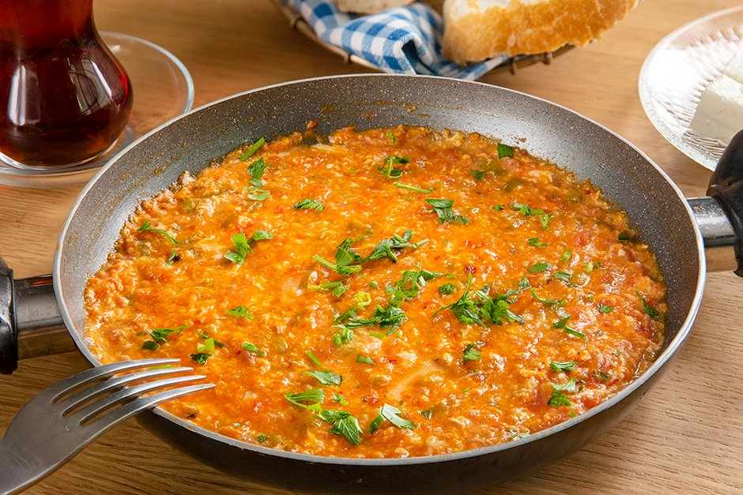

Menemen Recipe

If you are new to this dish, as we were, it's just a simple veggie sauté made with peppers, onions, tomatoes, and a subtle hint of spice, with a few eggs soft-scrambled on top. It is then whisked to the table while the dish is still hot and bubbly, and served with a side of crusty bread, which is meant to be dipped right in so that you can spread the menemen on top while it is still warm. And oh my word, together, the combo is downright delicious.
Pretty much every Turkish breakfast we were served in Istanbul offered various options for menemen — some with cheese (similar to feta), some with sausage, ham or pastrami, some with spinach, some with extra veggies, etc. So know that there are plenty of ways to customize this dish, if you would like! Barclay and I have grown to love just the basic recipe served with toasted bread and some (non-traditional, yet highly-recommended) slices of avocado on top. It's nice and healthy, and super simple and satisfying. I'm certain you all are going to love it too.
So let's make some menemen!
Ingredients
- Olive oil and butter: Both are traditionally used in this dish — olive oil to sauté the veggies, butter to stir into the tomato sauce to make it extra creamy. Although you are welcome to use only olive oil (or vegan butter) if you prefer not to cook with dairy.
- Onion: A white or yellow onion will do! Or, we were also served this dish once made with green onions, which was also delicious.
- Green pepper: We loved the slightly-spicy green peppers that were traditionally used in Turkey for this dish, but unfortunately they are not easy to find in the United States (or here in Spain). So as a substitute, you are welcome to use a large poblano or Anaheim pepper, which would be closest to the Turkish variety. Or you could also just use any color of traditional bell pepper too.
- Tomatoes: It's traditional to hand-grate fresh tomatoes for this recipe, which you are more than welcome to do when they are in season during the summertime. (In which case, you would need to grate or dice 1 pound of ripe tomatoes.) But to make this dish a bit more accessible year-round, I have written the recipe using a simple can of diced tomatoes, with their juices included.
- Aleppo pepper, salt and pepper: I made this dish using traditional Aleppo pepper, which you can order online if it's not available at your local grocery store. Or as a substitute, you are welcome to just use a combo of paprika and cayenne (or crushed red pepper flakes).
- Eggs: I made this dish with four eggs, but feel free to use two or three if you would like a higher sauce-to-egg ratio.
- Garnishes: Finally, you are welcome to top this dish with chopped parsley or chives, if you would like. I also love adding on some sliced avocado, which probably isn’t traditional, but it is delicious. It is also traditional to serve menemen with some good bread, which you can use to dip up the menemen and use it as a spread.
Directions
- Sauté the veggies: Sauté some finely-diced onion and peppers in olive oil until softened.
- Add tomatoes and seasonings: Add in the tomatoes, butter, Aleppo pepper, plus a generous pinch of salt and black pepper, and stir for a bit until the tomatoes are nice and hot.
- Add the eggs: Crack the eggs directly onto the tomato mixture and let them cook for about a minute or so. Then use a spoon to break up the yolks and briefly stir the eggs into the tomato mixture. (I recommend only partially stirring in the eggs, so that they are nice and swirly on top.) Continue cooking until the eggs reach your desired level of doneness. Traditionally the eggs are cooked until just barely set, yet still soft, about 3 to 4 minutes total.
- Serve: Serve immediately with your desired garnishes, along with a few slices of toasted bread to scoop up the menemen, and dive in!